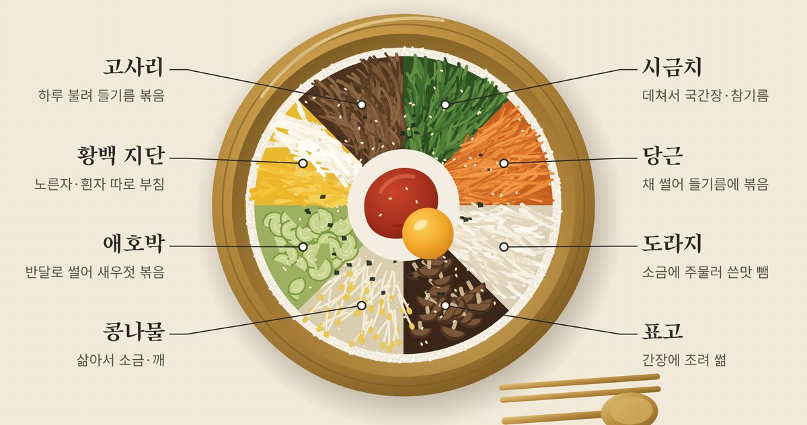

메뉴판 디자인 · SD-MN75
이 디자인으로 상담하기
고명당 비빔밥
고명 여덟 가지를 하나씩 따로 무치고 볶아 놋그릇에 둘러 담는 비빔밥 식당의 A4 메뉴판입니다. 위쪽에는 위에서 내려다본 놋그릇 비빔밥을 크게 그리고, 고명마다 선을 그어 이름과 손질법을 양옆에 적었습니다. 아래에는 대표 메뉴 놋그릇 비빔밥 12,000원을 먹색 상자에 따로 두고, 다른 비빔밥 다섯 가지와 곁들임, 음료·주류, 원산지 표시까지 한 장에 담았습니다.
A4 세로 · 1장 · 한국어 · 원화한지 미색 · 먹색 · 놋 금빛위에서 본 놋그릇 고명 지도
![고명당 메뉴판 전체. 한지 미색 바탕 위쪽 왼쪽에 놋그릇 비빔밥 · 점심과 이른 저녁이라는 작은 글과 큰 명조 제목 고명당, 오른쪽에 11:00 – 15:00 · 17:00 – 20:30, 마지막 주문 20:00 · 월요일 쉼이 있고, 그 아래 고명 여덟 가지를 하나씩 따로 무치고 볶아, 데운 놋그릇에 둘러 담습니다라는 문장이 있습니다. 가운데에는 위에서 내려다본 금빛 놋그릇에 흰 밥을 깔고 고사리, 시금치, 당근, 도라지, 표고, 콩나물, 애호박, 황백 지단을 부채꼴로 둘러 담은 그림이 크게 있고, 가운데에 붉은 고추장과 노른자, 깨와 김가루가 올라가 있습니다. 고명마다 선이 이어져 왼쪽에 고사리 하루 불려 들기름 볶음, 황백 지단 노른자·흰자 따로 부침, 애호박 반달로 썰어 새우젓 볶음, 콩나물 삶아서 소금·깨, 오른쪽에 시금치 데쳐서 국간장·참기름, 당근 채 썰어 들기름에 볶음, 도라지 소금에 주물러 쓴맛 뺌, 표고 간장에 조려 썲이 적혀 있고, 그릇 오른쪽 아래에 놋수저 한 벌이 놓여 있습니다. 아래 왼쪽 비빔밥 칸에는 콩나물국과 반찬 네 가지가 함께 나갑니다라는 안내와 먹색 상자 안 놋그릇 비빔밥, 고명 여덟 가지 · 고추장 · 노른자, 12,000원(금빛), 이어서 육회 비빔밥 16,000원, 산채 비빔밥 13,000원, 돌솥 비빔밥 13,000원, 6월 – 9월 표시가 붙은 열무 보리비빔밥 11,000원, 어린이 비빔밥 8,000원이 있습니다. 오른쪽 곁들임 칸에 녹두전 두 장 12,000원, 황포묵 무침 11,000원, 뚝배기 계란찜 5,000원, 음료 · 주류 칸에 막걸리 6,000원, 모주 한 잔 4,000원, 식혜 3,000원, 탄산음료 2,000원, 그 아래 밥 추가 1,000원 등 안내 세 줄이 있습니다. 맨 아래에 원산지 표시와 주소 자리, 전화 000-0000-0000이 있습니다.](page1.png)

고명 지도여덟 가지 고명을 부채꼴로 나눠 그리고, 선으로 이름과 손질법을 이어 그릇에 무엇이 올라가는지 한눈에 보이게 했습니다.
바꿀 수 있는 것
- 메뉴 이름, 가격, 영업시간과 원산지 표시
- 그림 속 고명 종류와 손질법 문구, 그릇을 돌솥이나 사기그릇으로
- A4 테이블 메뉴판, 벽에 거는 큰 메뉴판, 포장 안내 카드